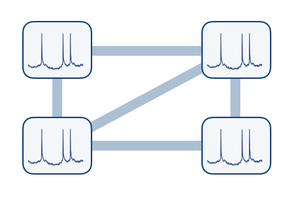
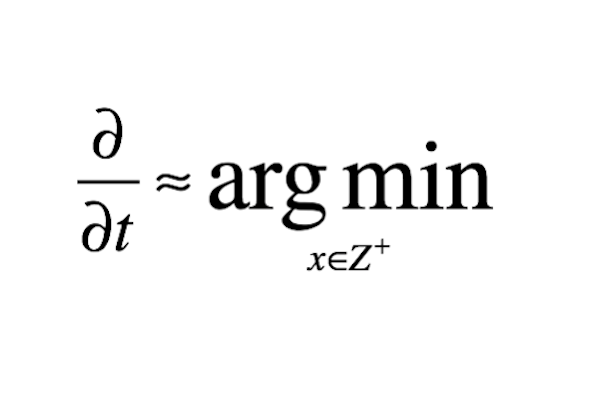

Research Overview
My research interests lie in exploring alternative computational models and paradigms (other than conventional sequential Von-Neumann or Turing Machine style models) which efficiently use the inherent physical dynamics of the underlying technology down to the basic devices to solve problems, like NP-hard optimization problems, which are considered hard to solve using conventional computing paradigms. The idea is to create continuous time dynamical systems using actual devices and use them for computation. From a theoretical perspective it raises interesting questions like what kind of continuous time dynamical systems can be used for what kinds of algorithms/problems. From an implementation perspective, it requires a close match between the physics of devices utilized in circuits with the algorithms used to solve hard problems. The task becomes more challenging as the kinds of devices and circuits/systems used pose additional constraints on the kind on dynamical systems that can be realized and on the kinds of representations (analog or symbolic) that should be used for quantities. My focus is on using new post-CMOS devices which have very different characteristics from the conventional devices and create novel dynamical systems for solving optimization problems. These dynamical systems can be categorized into the following:
- Coupled Oscillator Systems
- Stochastic Spiking Neural Networks
- Hardware for Optimization
Coupled Oscillator Systems
The dynamics of coupled synchronous systems like relaxation oscillators is very interesting. How a network of such oscillators can be used for the purpose of computation is a tough question in itself. I am working on using such systems for basic computational tasks as well as solving or approximating the solutions of hard combinatorial optimization problems.
Related publications:
Vertex coloring of graphs via phase dynamics of coupled oscillatory networks
Scientific Reports (2017)
WEB PDFAbstract: While Boolean logic has been the backbone of digital information processing, there exist classes of computationally hard problems wherein this paradigm is fundamentally inefficient. Vertex coloring of graphs, belonging to the class of combinatorial optimization, represents one such problem. It is well studied for its applications in data sciences, life sciences, social sciences and technology, and hence, motivates alternate, more efficient non-Boolean pathways towards its solution. Here we demonstrate a coupled relaxation oscillator based dynamical system that exploits insulator-metal transition in Vanadium Dioxide (VO2) to efficiently solve vertex coloring of graphs. Pairwise coupled VO2 oscillator circuits have been analyzed before for basic computing operations, but using complex networks of VO2 oscillators, or any other oscillators, for more complex tasks have been challenging in theory as well as in experiments. The proposed VO2 oscillator network harnesses the natural analogue between optimization problems and energy minimization processes in highly parallel, interconnected dynamical systems to approximate optimal coloring of graphs. We further indicate a fundamental connection between spectral properties of linear dynamical systems and spectral algorithms for graph coloring. Our work not only elucidates a physics-based computing approach but also presents tantalizing opportunities for building customized analog co-processors for solving hard problems efficiently.Synchronization of pairwise-coupled, identical, relaxation oscillators based on metal-insulator phase transition devices: A model study
Journal of Applied Physics (2015)
WEB PDFAbstract: Computing with networks of synchronous oscillators has attracted wide-spread attention as novel materials and device topologies have enabled realization of compact, scalable and low-power coupled oscillatory systems. Of particular interest are compact and low-power relaxation oscillators that have been recently demonstrated using MIT (metal-insulator-transition) devices using properties of correlated oxides. Further the computational capability of pairwise coupled relaxation oscillators has also been shown to outperform traditional Boolean digital logic circuits. This paper presents an analysis of the dynamics and synchronization of a system of two such identical coupled relaxation oscillators implemented with MIT devices. We focus on two implementations of the oscillator: (a) a D-D configuration where complementary MIT devices (D) are connected in series to provide oscillations and (b) a D-R configuration where it is composed of a resistor (R) in series with a voltage-triggered state changing MIT device (D). The MIT device acts like a hysteresis resistor with different resistances in the two different states. The synchronization dynamics of such a system has been analyzed with purely charge based coupling using a resistive (RC) and a capacitive (CC) element in parallel. It is shown that in a D-D configuration symmetric, identical and capacitively coupled relaxation oscillator system synchronizes to an anti-phase locking state, whereas when coupled resistively the system locks in phase. Further, we demonstrate that for certain range of values of RC and CC, a bistable system is possible which can have potential applications in associative computing. In D-R configuration, we demonstrate the existence of rich dynamics including non-monotonic flows and complex phase relationship governed by the ratios of the coupling impedance. Finally, the developed theoretical formulations have been shown to explain experimentally measured waveforms of such pairwise coupled relaxation oscillators.
Stochastic Spiking Neural Networks
Spiking neural networks have been shown to be useful for a variety of tasks like learning, inference and decision making. Also these can be very useful on front-ends as their implementation would need very less power and a small computing machine on the client. I am working on building compact truly stochastic spiking neurons using IMT (insulator-metal-transition) devices whose characteristics, like stochasticity, depend on their inherent physics and does not require any symbolic manipulation of quantities. I’m also working on creating synapses or connections between these neurons which would enable networks of such neurons to be used for learning and inference.

Related publications:
Stochastic IMT (insulator-metal-transition) neurons: An interplay of thermal and threshold noise at bifurcation
arXiv:1708.06238 [cs] (2017)
WEBAbstract: A stochastic neuron, a key hardware kernel for implementing stochastic neural networks, is constructed using an insulator-metal-transition (IMT) device based on electrically induced phase-transition in series with a tunable resistance. We show that such an IMT neuron has dynamics similar to a piecewise linear FitzHugh-Nagumo (FHN) neuron. Spiking statistics of such neurons are demonstrated experimentally using Vanadium Dioxide (VO2) based IMT neurons, and modeled as an Ornstein-Uhlenbeck (OU) process with a fluctuating boundary. The stochastic spiking is explained by thermal noise and threshold fluctuations acting as precursors of bifurcation which result in a sigmoid-like transfer function. Moments of interspike intervals are calculated analytically by extending the first-passage-time (FPT) models for Ornstein-Uhlenbeck (OU) process to include a fluctuating boundary. We find that the coefficient of variation of interspike intervals depend on the relative proportion of thermal and threshold noise. In the current experimental demonstrations where both kinds of noise are present, the coefficient of variation is about an order of magnitude higher compared to the case where only thermal noise were present.Ultra-low power probabilistic IMT neurons for stochastic sampling machines
VLSI Technology, 2017 Symposium on (2017)
WEBAbstract: Stochastic sampling machines (SSM) utilize neural sampling from probabilistic spiking neurons to escape local minima and prevent overfitting of training datasets [1]. This enables improved error rates compared to deterministic implementations, and, in turn, enables lower bit precision, decreased chip area, and reduced energy consumption. In this work, we experimentally demonstrate: (i) Insulator-to-Metal Phase Transition (IMT) neurons with record low peak operating power of 11.9μW at VDD=0.7V; (ii) the IMT in vanadium dioxide (VO2) provides a natural probabilistic hardware substrate for realizing a compact stochastic IMT neuron for SSMs; (iii) implementation of SSM for pattern recognition on MNIST database [2] using experimentally calibrated device modeling. These results are compared to a 22nm CMOS ASIC which shows stochastic IMT neuron based SSMs result in a 4.5x reduction in system power consumption.
Hardware for Optimization
Systems need not fall under the category of coupled oscillators, or spiking neurons in order to be useful for computing tough problems. Exploring various algorithms and methods for solving combinatorial problems can give insights into the kind of continuous time dynamical systems that can be modeled using circuits for finding solutions to optimization problems.
